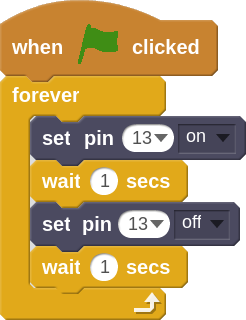
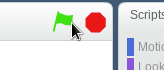
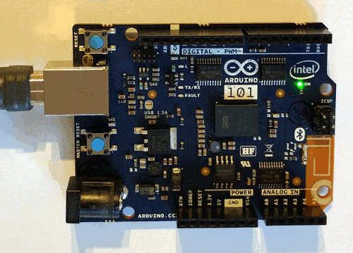

Hello, Arduino!
In this project we will explore how to communicate between the Arduino board and Scratch programming. To do this, we will program the Arduino to turn an LED light on and off at a specified interval.
- Open the Arduino 101 extension on ScratchX. You can also get to the extension by going to scratchx.org and clicking on "See all extensions". The Arduino 101 extension will be towards the top of the list.
- Plug your Arduino board into your computer's USB port. After a few seconds the indicator light under More blocks should change from yellow to green.
- Let's start by grabbing a green flag and a forever block since we will want our blink program to run forever (or until we stop the program).
- One nice feature of our Arduino board is that there is a built-in green LED permanently connected to pin #13 of the Arduino. So for this program to work, all we have to do is tell the Arduino to turn pin 13 on then off. We need to use the wait blocks to slow things down otherwise it would blink so fast our eyes wouldn't be able to see it!

- When you click the green flag you should see one of the green LEDs on the Arduino start blinking on and off.


- Now see if you can modify this code to change the behavior of the LED light.
Can you:
- Make the LED blink faster or slower?
- Make the LED turn on and off at different speeds?
- Advanced: Make the LED blink at random intervals?
- Advanced: Use a variable to set the speed of the blink pattern?